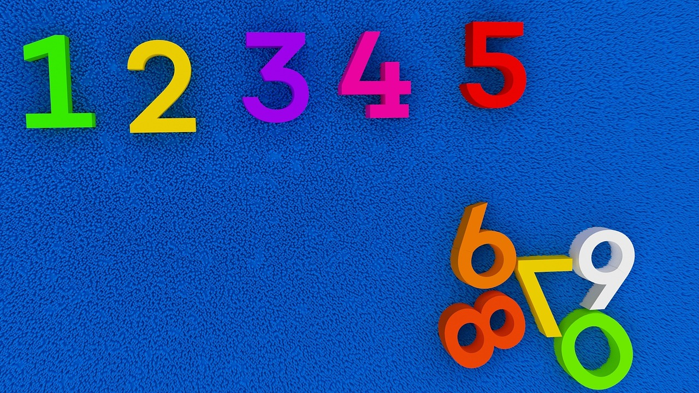
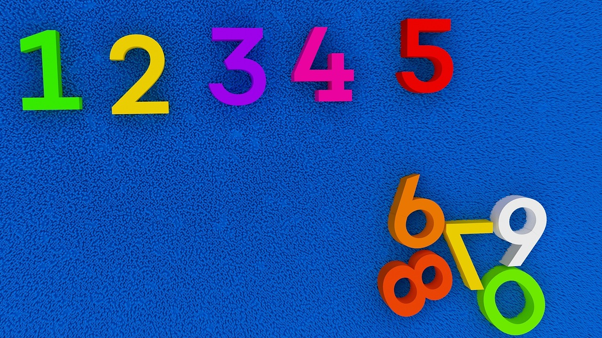

Since we opened in Kingston Jamaica, we have been helping teachers gain qualifications which have allowed them to teach English around the world, develop their careers and develop their professional skills. Over 5000 teachers have completed their CELTA course with us and over 600 their Trinity Diploma in TESOL. The company was founded in by Fitz Black, with the ambition of creating a place where students, teachers, trainers and marketing and admin. staff felt happy working and learning. For us that means helping people to focus on their aims and enjoy the experience of achieving them. Creating an atmosphere of open communication, support and willingness to try out new ideas is important to us. We think learning to teach is an important and challenging endeavor. We want you to feel as excited about it as we do!